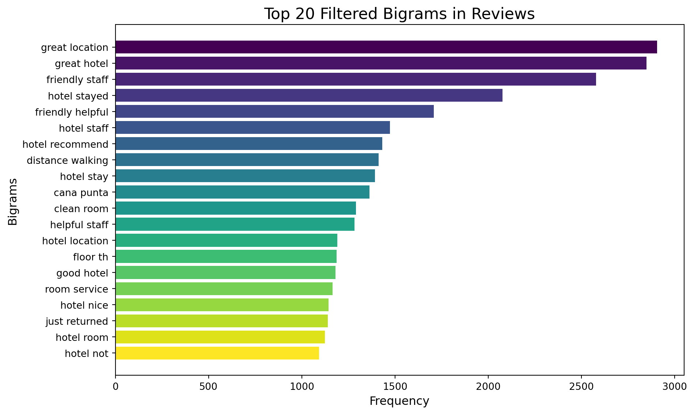
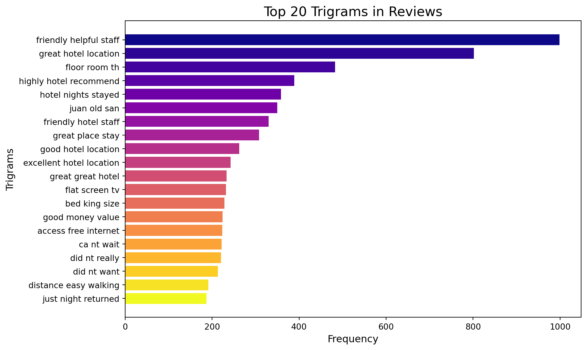

I explored the linguistic patterns in guest reviews through term frequency and n-gram analysis (bigrams and trigrams). These techniques highlight recurring phrases that reflect customer priorities and recurring themes.
Key Steps
Term Frequency:
Tokenized and cleaned text data to calculate the frequency of individual words.
Identified the most common words, excluding generic stopwords, to reveal dominant topics like “service,” “clean,” and “location.”
N-gram Analysis:
Extracted bigrams (two-word combinations) and trigrams (three-word combinations) to capture contextual patterns.
Normalized n-grams (e.g., treating “great hotel” and “hotel great” as identical) for more meaningful insights.
Applied manual filters to exclude irrelevant or uninformative n-grams (e.g., “ca nt,” “did not”).
import pandas as pdimport refrom nltk.corpus import stopwordsfrom nltk.tokenize import word_tokenizeimport nltk# Load datadf = pd.read_csv('~/Downloads/tripadvisor_hotel_reviews.csv')# Create the 'word_length' column firstdf["word_length"] = df["Review"].apply(len)# Now filter reviews with 'word_length' <= 3000df = df[df['word_length'] <=3000]# Display a sample to confirmprint(df.head())
Review Rating word_length
0 nice hotel expensive parking got good deal sta... 4 593
1 ok nothing special charge diamond member hilto... 2 1689
2 nice rooms not 4* experience hotel monaco seat... 3 1427
3 unique, great stay, wonderful time hotel monac... 5 600
4 great stay great stay, went seahawk game aweso... 5 1281
Code
# Text cleaning functiondef clean_text(text): text = text.lower() # Convert to lowercase text = re.sub(r'[^\w\s]', '', text) # Remove punctuation text = re.sub(r'\d+', '', text) # Remove numbers text = re.sub(r'\s+', ' ', text).strip() # Remove extra whitespacereturn text# Apply text cleaningdf.loc[:, 'cleaned_review'] = df['Review'].apply(clean_text)
Code
from nltk.util import ngramsfrom nltk.corpus import stopwordsimport matplotlib.pyplot as pltimport pandas as pdimport numpy as npfrom collections import Counterimport nltk# Step 1: Download Stopwordsnltk.download('stopwords')stop_words =set(stopwords.words('english'))# Function to clean text (if not already done)def clean_text(text): text = text.lower() # Convert to lowercase text = re.sub(r'[^\w\s]', '', text) # Remove punctuation text = re.sub(r'\d+', '', text) # Remove numbersreturn text# Assuming 'df' contains the 'Review' column# Preprocess reviewsdf['cleaned_review'] = df['Review'].apply(clean_text)# Function to generate n-grams from textdef generate_ngrams(text, n): tokens = text.split() # Split text into wordsreturnlist(ngrams(tokens, n)) # Generate n-grams# Step 2: Generate bigrams and trigramsdf['bigrams'] = df['cleaned_review'].apply(lambda x: generate_ngrams(x, 2)) # Bigramsdf['trigrams'] = df['cleaned_review'].apply(lambda x: generate_ngrams(x, 3)) # Trigrams# Step 3: Flatten bigrams and trigrams into listsall_bigrams = [bigram for bigram_list in df['bigrams'] for bigram in bigram_list]all_trigrams = [trigram for trigram_list in df['trigrams'] for trigram in trigram_list]# Step 4: Normalize bigrams and trigrams (sort alphabetically to handle duplicates)def normalize_ngram(ngram):returntuple(sorted(ngram)) # Sort words alphabetically in each n-gramnormalized_bigrams = [normalize_ngram(bigram) for bigram in all_bigrams]normalized_trigrams = [normalize_ngram(trigram) for trigram in all_trigrams]# Step 5: Count frequencies of normalized bigrams and trigramsbigram_counts = Counter(normalized_bigrams)trigram_counts = Counter(normalized_trigrams)# Step 6: Exclude unwanted bigramsexclude_bigrams = [('ca', 'nt'), ('did', 'nt'), ('did', 'not')]def filter_exclude_bigrams(bigram_counts, exclude_list): filtered_bigrams = {bigram: count for bigram, count in bigram_counts.items() if bigram notin exclude_list}return filtered_bigramsfiltered_bigram_counts = filter_exclude_bigrams(bigram_counts, exclude_bigrams)# Step 7: Get the most common bigrams and trigramsmost_common_filtered_bigrams = Counter(filtered_bigram_counts).most_common(20)most_common_trigrams = trigram_counts.most_common(20)# Step 8: Convert results to DataFrames for visualizationfiltered_bigram_df = pd.DataFrame(most_common_filtered_bigrams, columns=['Bigram', 'Frequency'])filtered_bigram_df['Bigram'] = filtered_bigram_df['Bigram'].apply(lambda x: ' '.join(x)) # Convert tuples to stringstrigram_df = pd.DataFrame(most_common_trigrams, columns=['Trigram', 'Frequency'])trigram_df['Trigram'] = trigram_df['Trigram'].apply(lambda x: ' '.join(x)) # Convert tuples to strings# Step 9: Visualization for Bigramscolors = plt.cm.viridis(np.linspace(0, 1, len(filtered_bigram_df))) # Generate colors from a colormapplt.figure(figsize=(10, 6))plt.barh(filtered_bigram_df['Bigram'], filtered_bigram_df['Frequency'], color=colors)plt.title('Top 20 Filtered Bigrams in Reviews', fontsize=16)plt.xlabel('Frequency', fontsize=12)plt.ylabel('Bigrams', fontsize=12)plt.gca().invert_yaxis()plt.tight_layout()plt.show()# Step 10: Visualization for Trigramscolors = plt.cm.plasma(np.linspace(0, 1, len(trigram_df))) # Use a different colormap for trigramsplt.figure(figsize=(10, 6))plt.barh(trigram_df['Trigram'], trigram_df['Frequency'], color=colors)plt.title('Top 20 Trigrams in Reviews', fontsize=16)plt.xlabel('Frequency', fontsize=12)plt.ylabel('Trigrams', fontsize=12)plt.gca().invert_yaxis()plt.tight_layout()plt.show()
[nltk_data] Downloading package stopwords to /Users/yixin/nltk_data...
[nltk_data] Package stopwords is already up-to-date!


Key aspect like bed, internet and beach were added based on this.